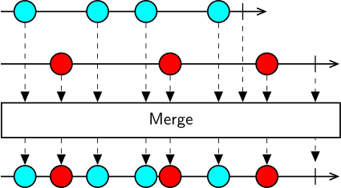
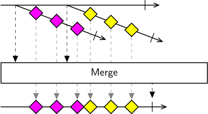

Class Merge
Represents an operator that merges any number of observable sequences into a single observable sequence.

The Merge operator allows you to combine the output of multiple sequences of the same type into a single sequence. Merge subscribes to all source sequences in parallel and emits all the elements from each sequence downstream.
The resulting sequence will terminate successfully only when all source sequences have terminated successfully, or exceptionally as soon as any sequence produces an error.
Higher-order operator
Merge also works as a higher-order operator, so it can take as input a sequence of observable sequences. In this case, it will subscribe to all source sequences as soon as they are emitted by the outer sequence, and emit all elements from each sequence downstream.

The higher-order variant is useful to combine notifications from multiple event sources running in parallel, for example when waiting for the first event from multiple input conditionals, or when logging data from multiple sources to the same file.
[Combinator]
public class Merge- Inheritance
-
Merge
- Inherited Members
Methods
Process<TSource>(IObservable<IEnumerable<TSource>>)
Merges all inner enumerable sequences into one observable sequence.
public IObservable<TSource> Process<TSource>(IObservable<IEnumerable<TSource>> sources)Parameters
sourcesIObservable<IEnumerable<TSource>>The observable sequence of inner enumerable sequences.
Returns
- IObservable<TSource>
An observable sequence that contains all the elements of each inner enumerable sequence.
Type Parameters
TSourceThe type of the elements in the source sequences.
Process<TSource>(IObservable<IObservable<TSource>>)
Merges elements from all inner observable sequences into a single observable sequence.
public IObservable<TSource> Process<TSource>(IObservable<IObservable<TSource>> sources)Parameters
sourcesIObservable<IObservable<TSource>>The observable sequence of inner observable sequences.
Returns
- IObservable<TSource>
The observable sequence that merges the elements of the inner sequences.
Type Parameters
TSourceThe type of the elements in the source sequences.
Process<TSource>(IObservable<TSource>, IObservable<TSource>)
Merges elements from two observable sequences into a single observable sequence.
public IObservable<TSource> Process<TSource>(IObservable<TSource> first, IObservable<TSource> second)Parameters
firstIObservable<TSource>The first observable sequence.
secondIObservable<TSource>The second observable sequence.
Returns
- IObservable<TSource>
The observable sequence that merges the elements of the two sequences.
Type Parameters
TSourceThe type of the elements in the source sequences.
Process<TSource>(IObservable<TSource>, IObservable<TSource>, params IObservable<TSource>[])
Merges elements from the specified observable sequences into a single observable sequence.
public IObservable<TSource> Process<TSource>(IObservable<TSource> first, IObservable<TSource> second, params IObservable<TSource>[] remainder)Parameters
firstIObservable<TSource>The first observable sequence.
secondIObservable<TSource>The second observable sequence.
remainderIObservable<TSource>[]The remaining observable sequences to merge.
Returns
- IObservable<TSource>
The observable sequence that merges the elements of the observable sequences.
Type Parameters
TSourceThe type of the elements in the source sequences.